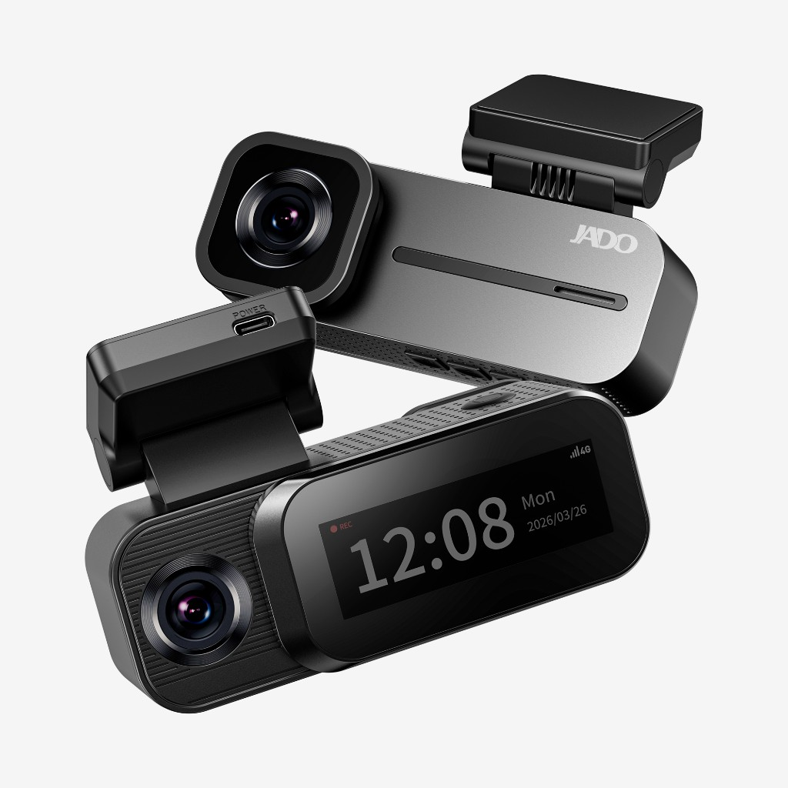
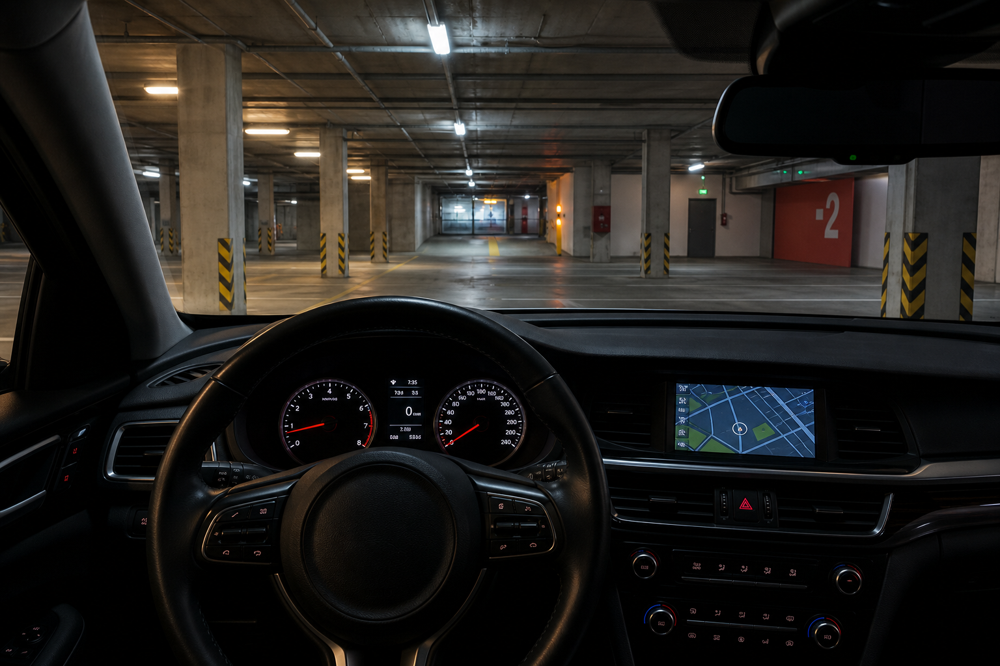
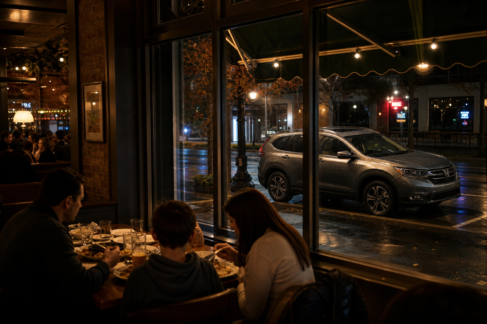
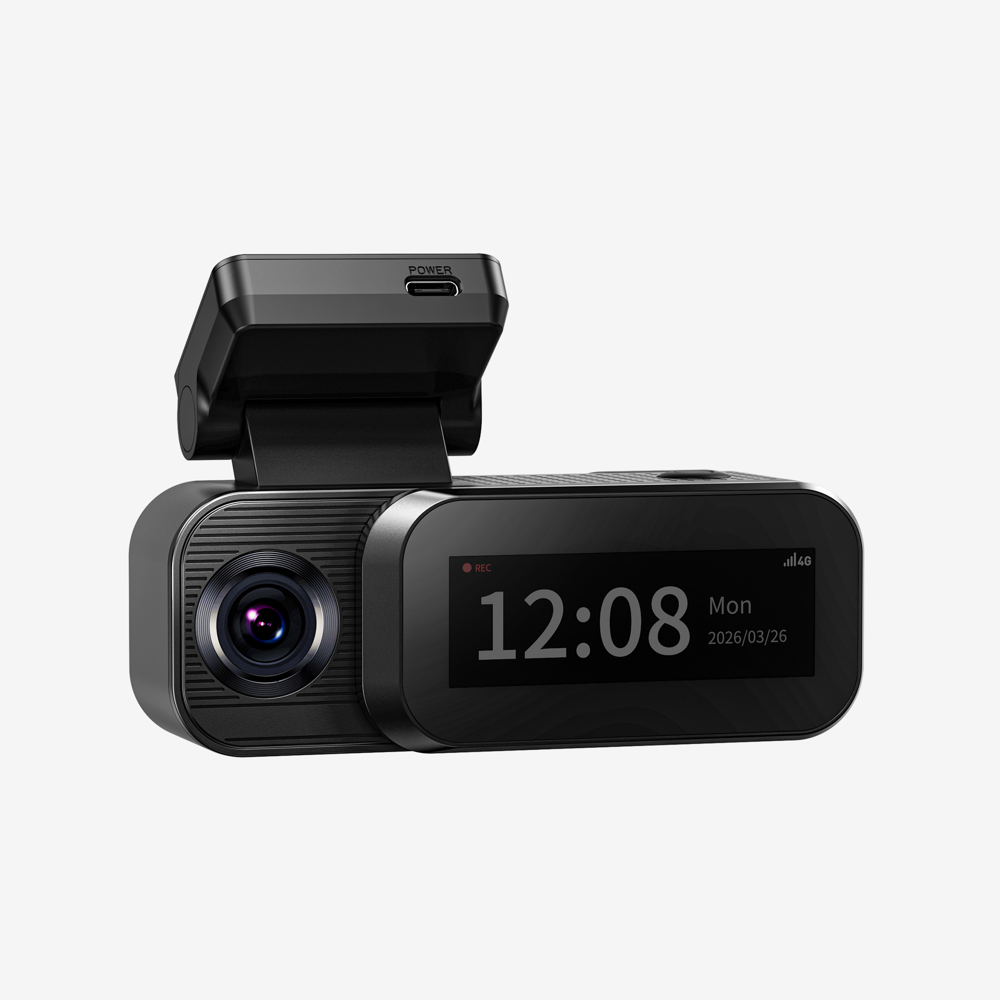
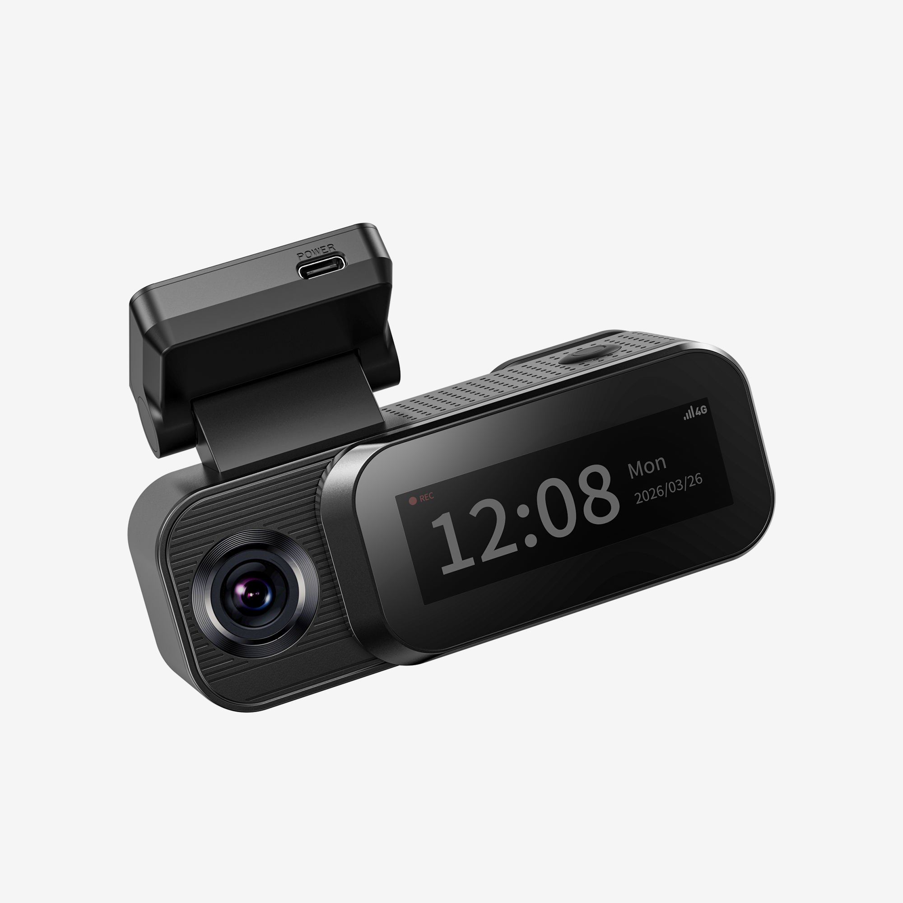
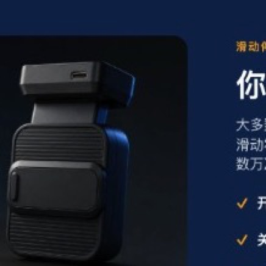

Remote live view
Watch the vehicle over 4G when coverage and the service plan allow it. Wi-Fi playback still works without a plan.
A 4G-connected, 3-channel dash cam that stays with your vehicle on the road and after you park. Front camera is 2.5K.

$269.00Today ships with 128GB card
4G remote viewing and parking alerts need an eligible service plan. Driving recording and Wi-Fi do not.
Prices and package notes are taken from the current locked H2 page. Add to Cart opens the JADOCAM Shopify cart for the selected variant. This preview does not replace the live page.
Four capabilities, in the order that changes the decision: connection, parking, coverage, and a privacy control you can feel.
Check the vehicle from your phone where 4G coverage and an eligible plan are available.
AOV low-power watch is designed to continue after the engine is off, with the right hardwire setup.
Front, cabin, and rear record together. The front camera is 2.5K. Cabin and rear are 1080P.
A Hall-sensor cover slides over the cabin lens. Privacy is a physical position, not only a setting.
You lock the car and walk away. With 4G and an eligible plan, H2 can show a live view and send event notices to the AIDOVID app.

Watch the vehicle over 4G when coverage and the service plan allow it. Wi-Fi playback still works without a plan.
Key events can be sent to the app over 4G. Alerts depend on the plan, signal, and how H2 is powered.
No SIM tray. The eSIM is in the device. Plan price, trial, and coverage are shown at activation — they are not fixed on this page.
After the engine is off, AOV is a low-power watch — not a claim of all-day high-resolution video. When H2 detects an impact or other activity it is set to answer, it switches to full-frame recording.



You leave the vehicle. Cigarette-lighter power is for driving. Parking watch needs the proper hardwire setup.
AOV draws less power than traditional time-lapse so the guard can last longer. It is not continuous 2.5K recording.
On impact, or other activity the product is designed to catch, H2 switches to full-frame recording.
With 4G and an eligible plan, a clip and a notice can reach your phone. Delivery is not guaranteed in every location.
AOV decides what to record while the car is parked. 4G is how that recording can reach you. They are separate jobs.
AOV keeps a low-power watch if hardwire power is in place. Nothing here requires you to be nearby.
On a collision, H2 keeps footage from before, during, and after the event. This frame is the road-test film, not a staged crash.
4G can carry the notice and remote playback when the plan and signal are available. Wi-Fi review remains the path without a plan.
Low-power parking watch, then full-frame recording when a supported event is detected. It does not replace a hardwire kit.
Remote live view, event notices, and cloud clips through the built-in eSIM. Local recording does not depend on it.
The road ahead, the cabin, and the road behind record at the same time. The large frame below is the existing H2 road-test film, labeled as the front camera.


Cabin and rear driving samples are not in the current asset library, so those frames show the real hardware instead of a generated recording. A confirmed cabin interior clip and a confirmed rear-camera clip should replace them before launch.
The front camera records 2.5K (2560×1440) at 30fps, F1.55. These are the existing road-test and night films already used for H2. There is no artificial sharpness comparison.
Slide the cover. The cabin lens is physically blocked, and a Hall sensor reads that position. It is not a software-only switch.
Open leaves the cabin lens clear. Closed slides the cover across it.
Dual-band 2.4 / 5.8 GHz, published up to 35.85 MB/s, plus Bluetooth for a quicker connection. Local transfer does not need a 4G plan.
A collision saves the footage from before, during, and after the moment, so the clip is kept instead of being overwritten.
GPS, GLONASS, Galileo, BDS, and QZSS, with A-GPS. Route, speed, and location can be recorded with the clip.
A 3-inch IPS screen on the cabin side for status at the windshield, including recording and 4G indicators.
Road-facing camera, cabin screen, and the mount you actually see from the driver seat. No invented internal components.




Remote live view, cloud events, and 4G alerts need an eligible 4G / cloud plan. Driving recording and Wi-Fi features work without one. Plan price, trial, and availability are shown on the activation page, not fixed here.
H2 ships with an embedded eSIM, so there is no SIM tray. The current product page says you activate a data plan in the app, in about three minutes, by holding the phone near the device. Network coverage and plan terms still apply.
Yes for recording while you drive, and for Wi-Fi features. You will not get remote viewing, cloud clips, or 4G alerts until a plan is active.
AOV is a low-power watch after you park. It uses less power than traditional time-lapse. When an impact or other supported activity is detected, H2 switches to full-frame recording. It is not 24-hour 2.5K video.
Yes. Parking monitoring and the remote sentinel need the proper hardwire setup. The published power path is vehicle 12–24V through Type-C hardwire, with the device at DC 5V 3A. Cigarette-lighter power is for normal driving.
Yes. H2 is a 3-channel camera: 2.5K front, 1080P cabin, and 1080P Ethernet rear, each at 30fps.
Slide the cover to block the cabin lens. A Hall sensor reads the open or closed position, so the camera can treat privacy mode as a real mechanical state.
The locked page still falls back to a generic dash-cam box list, including mirror straps, which does not match this windshield camera. That list is intentionally left off this preview until the H2 box contents are confirmed. The card in the box follows the package you select.
4G when you are away. A parking watch after the engine stops. Three cameras while you drive. A cover you can close with your hand.